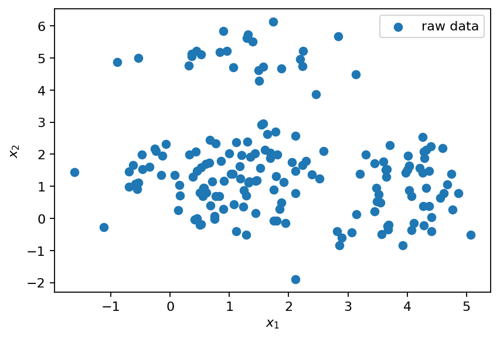

Reduced-order modeling of the flow past a cylinder
Contents

This work is licensed under a Creative Commons Attribution 4.0 International License.
Reduced-order modeling of the flow past a cylinder#
In this notebook, we cover the following topics:
Reduced-order models of dynamical systems
Motivation for cluster-based models
Grouping similar data points
Modeling the transition between clusters
Measuring the model’s performance
Dealing with high-dimensional data
Grouping similar data points#
from typing import Tuple, Dict
from itertools import groupby
from collections import defaultdict
import torch as pt
import numpy as np
import matplotlib.pyplot as plt
from sklearn.cluster import KMeans
from flowtorch import DATASETS
from flowtorch.data import FOAMDataloader, mask_box
# increase plot resolution
plt.rcParams["figure.dpi"] = 160
# make results reproducible
pt.manual_seed(0)
# create output directory
output = "output"
!mkdir -p $output
def create_normal_cluster(center: Tuple[float], stdev: Tuple[float],
n_points: int) -> pt.Tensor:
"""Create cluster of normally distributed points.
"""
assert len(center) == len(stdev)
n_dim = len(center)
cluster = pt.zeros((n_points, n_dim))
for i, (mean, std) in enumerate(zip(center, stdev)):
cluster[:, i] = pt.normal(mean, std, size=(n_points,))
return cluster
cluster_1 = create_normal_cluster((1.0, 1.0), (1.0, 1.0), 100)
cluster_2 = create_normal_cluster((4.0, 1.0), (0.5, 1.0), 50)
cluster_3 = create_normal_cluster((1.0, 5.0), (1.0, 0.5), 25)
plt.scatter(cluster_1[:, 0], cluster_1[:, 1], marker="o", label="cluster 1")
plt.scatter(cluster_2[:, 0], cluster_2[:, 1], marker="x", label="cluster 2")
plt.scatter(cluster_3[:, 0], cluster_3[:, 1], marker="+", label="cluster 3")
plt.scatter((1.0, 4.0, 1.0), (1.0, 1.0, 5.0), marker="*", c="C3", s=100, label="centroids")
plt.xlabel(r"$x_1$")
plt.ylabel(r"$x_2$")
plt.legend()
plt.savefig(f"{output}/clustering_test_data.svg", bbox_inches="tight")
data = pt.cat((cluster_1, cluster_2, cluster_3))
rows_shuffled = pt.randperm(data.shape[0])
data = data[rows_shuffled]
plt.scatter(data[:, 0], data[:, 1], marker="o", label="raw data")
plt.xlabel(r"$x_1$")
plt.ylabel(r"$x_2$")
plt.legend()
plt.savefig(f"{output}/clustering_test_data_no_labels.svg", bbox_inches="tight")

K-means clustering#
def initialize_centroids_randomly(k: int, data: pt.Tensor) -> pt.Tensor:
"""Randomly select data points as initial centroids.
"""
n_points = data.shape[0]
probs = pt.ones(n_points) / n_points
rows = pt.multinomial(probs, k)
return data[rows]
centroids = initialize_centroids_randomly(3, data)
plt.scatter(data[:, 0], data[:, 1], marker="o", label="raw data")
plt.scatter(centroids[:, 0], centroids[:, 1], marker="*", c="C3", s=100, label="initial centroids")
plt.xlabel(r"$x_1$")
plt.ylabel(r"$x_2$")
plt.legend()
plt.savefig(f"{output}/random_initial_centroids.svg", bbox_inches="tight")
def find_nearest_centroid(centroids: pt.Tensor, data: pt.Tensor) -> pt.Tensor:
"""Find the id of the nearest centroid for each data point.
"""
n_points = data.shape[0]
n_centroids = centroids.shape[0]
labels = pt.zeros(n_points, dtype=pt.int64)
distance = pt.zeros((n_points, n_centroids))
for i in range(n_centroids):
distance[:, i] = pt.linalg.norm(data - centroids[i], dim=1)
return pt.argmin(distance, dim=1)
initial_labels = find_nearest_centroid(centroids, data)
cl_1 = data[initial_labels == 0]
cl_2 = data[initial_labels == 1]
cl_3 = data[initial_labels == 2]
plt.scatter(cl_1[:, 0], cl_1[:, 1], marker="o", label="initial cluster 1")
plt.scatter(cl_2[:, 0], cl_2[:, 1], marker="x", label="initial cluster 2")
plt.scatter(cl_3[:, 0], cl_3[:, 1], marker="+", label="initial cluster 3")
plt.scatter(centroids[:, 0], centroids[:, 1], marker="*", c="C3", s=100, label="initial centroids")
plt.xlabel(r"$x_1$")
plt.ylabel(r"$x_2$")
plt.legend()
plt.savefig(f"{output}/intial_cluster_labels.svg", bbox_inches="tight")
def update_centroids(centroids: pt.Tensor, data: pt.Tensor) -> pt.Tensor:
"""Update centroid position based on cluster mean value.
"""
n_centroids = centroids.shape[0]
new_centroids = pt.zeros_like(centroids)
cluster_ids = find_nearest_centroid(centroids, data)
for i in range(n_centroids):
new_centroids[i] = data[cluster_ids == i].mean(dim=0)
return new_centroids
new_centroids = update_centroids(centroids, data)
new_labels = find_nearest_centroid(new_centroids, data)
cl_1 = data[new_labels == 0]
cl_2 = data[new_labels == 1]
cl_3 = data[new_labels == 2]
plt.scatter(cl_1[:, 0], cl_1[:, 1], marker="o", label="new cluster 1")
plt.scatter(cl_2[:, 0], cl_2[:, 1], marker="x", label="new cluster 2")
plt.scatter(cl_3[:, 0], cl_3[:, 1], marker="+", label="new cluster 3")
plt.scatter(centroids[:, 0], centroids[:, 1], marker="*", edgecolors="C3", s=100, facecolors="none", label="initial centroids")
plt.scatter(new_centroids[:, 0], new_centroids[:, 1], marker="*", c="C3", s=100, label="updated centroids")
for i in range(centroids.shape[0]):
plt.annotate("", xy=new_centroids[i], xytext=centroids[i], arrowprops=dict(arrowstyle="->"))
plt.xlabel(r"$x_1$")
plt.ylabel(r"$x_2$")
plt.legend()
plt.savefig(f"{output}/updated_cluster_labels.svg", bbox_inches="tight")
max_iter = 10
tol = 1.0e-4
centroids_hist = []
centroids_hist.append(initialize_centroids_randomly(3, data))
for it in range(max_iter):
centroids_hist.append(update_centroids(centroids_hist[-1], data))
mean_diff = pt.linalg.norm(centroids_hist[-1]-centroids_hist[-2], dim=1).mean()
if mean_diff < tol:
print(f"Clustering converged after {it+1} iterations.")
break
Clustering converged after 6 iterations.
fig, axarr = plt.subplots(1, 4, figsize=(8, 3), sharex=True, sharey=True)
for i, ct in enumerate(centroids_hist[:4]):
labels = find_nearest_centroid(centroids_hist[i], data)
cl_1 = data[labels == 0]
cl_2 = data[labels == 1]
cl_3 = data[labels == 2]
axarr[i].scatter(cl_1[:, 0], cl_1[:, 1], marker="o")
axarr[i].scatter(cl_2[:, 0], cl_2[:, 1], marker="x")
axarr[i].scatter(cl_3[:, 0], cl_3[:, 1], marker="+")
axarr[i].scatter(ct[:, 0], ct[:, 1], marker="*", c="C3", s=100)
if i > 0:
axarr[i].scatter(centroids_hist[i-1][:, 0], centroids_hist[i-1][:, 1], marker="*", edgecolors="C3", facecolors="none", s=100)
for j in range(centroids_hist[-1].shape[0]):
axarr[i].annotate("", xy=centroids_hist[i][j], xytext=centroids_hist[i-1][j], arrowprops=dict(arrowstyle="->"))
axarr[i].set_xlabel(r"$x_1$")
axarr[i].set_title(f"iteration {i}")
axarr[0].set_ylabel(r"$x_2$")
plt.savefig(f"{output}/kmeans_iterations.svg", bbox_inches="tight")
Problem of bad centroid initialization#
bad_centroids = pt.tensor([[2.5, 1.0], [1.0, 5.0], [2.0, 5.0]])
initial_labels = find_nearest_centroid(bad_centroids, data)
cl_1 = data[initial_labels == 0]
cl_2 = data[initial_labels == 1]
cl_3 = data[initial_labels == 2]
plt.scatter(cl_1[:, 0], cl_1[:, 1], marker="o", label="initial cluster 1")
plt.scatter(cl_2[:, 0], cl_2[:, 1], marker="x", label="initial cluster 2")
plt.scatter(cl_3[:, 0], cl_3[:, 1], marker="+", label="initial cluster 3")
plt.scatter(bad_centroids[:, 0], bad_centroids[:, 1], marker="*", c="C3", s=100, label="initial centroids")
plt.xlabel(r"$x_1$")
plt.ylabel(r"$x_2$")
plt.legend()
plt.savefig(f"{output}/bad_intial_centroids.svg", bbox_inches="tight")
max_iter = 10
tol = 1.0e-4
bad_centroids_hist = []
bad_centroids_hist.append(bad_centroids)
for it in range(max_iter):
bad_centroids_hist.append(update_centroids(bad_centroids_hist[-1], data))
mean_diff = pt.linalg.norm(bad_centroids_hist[-1]-bad_centroids_hist[-2], dim=1).mean()
if mean_diff < tol:
print(f"Clustering converged after {it+1} iterations.")
break
Clustering converged after 3 iterations.
final_labels = find_nearest_centroid(bad_centroids_hist[-1], data)
cl_1 = data[final_labels == 0]
cl_2 = data[final_labels == 1]
cl_3 = data[final_labels == 2]
plt.scatter(cl_1[:, 0], cl_1[:, 1], marker="o", label="final cluster 1")
plt.scatter(cl_2[:, 0], cl_2[:, 1], marker="x", label="final cluster 2")
plt.scatter(cl_3[:, 0], cl_3[:, 1], marker="+", label="final cluster 3")
plt.scatter(bad_centroids_hist[-1][:, 0], bad_centroids_hist[-1][:, 1], marker="*", c="C3", s=100, label="final centroids")
plt.xlabel(r"$x_1$")
plt.ylabel(r"$x_2$")
plt.legend()
plt.savefig(f"{output}/bad_intial_centroids_final.svg", bbox_inches="tight")
def compute_cluster_inertia(centroids: pt.Tensor, data: pt.Tensor) -> float:
"""Compute sum of squared distances over all clusters.
"""
labels = find_nearest_centroid(centroids, data)
inertia = 0.0
for i in range(data.shape[1]):
inertia += pt.linalg.norm(data[labels==i]-centroids[i], dim=1).square().sum()
return inertia
print("Inertia for random initialization: {:2.4f}".format(compute_cluster_inertia(centroids_hist[-1], data)))
print("Inertia for bad initialization: {:2.4f}".format(compute_cluster_inertia(bad_centroids_hist[-1], data)))
Inertia for random initialization: 110.1418
Inertia for bad initialization: 540.7017
K-means++ clustering#
def initialize_centroids_improved(k: int, data: pt.Tensor) -> pt.Tensor:
"""Randomly select data points as initial centroids.
"""
n_points = data.shape[0]
probs = pt.ones(n_points) / n_points
rows = pt.zeros(k, dtype=pt.int64)
rows[0] = pt.multinomial(probs, 1)
distance = pt.zeros((n_points, k-1))
for i in range(1, k):
distance[:, i-1] = pt.linalg.norm(data-data[rows[i-1]], dim=1).square()
min_dist = distance[:, :i].min(dim=1).values
probs = min_dist / min_dist.sum()
rows[i] = pt.multinomial(probs, 1)
return data[rows]
centroids = initialize_centroids_improved(3, data)
plt.scatter(data[:, 0], data[:, 1], marker="o", label="raw data")
plt.scatter(centroids[:, 0], centroids[:, 1], marker="*", c="C3", s=100, label="initial centroids")
plt.xlabel(r"$x_1$")
plt.ylabel(r"$x_2$")
plt.legend()
plt.savefig(f"{output}/improved_initial_centroids.svg", bbox_inches="tight")

initialization_methods = {
"random" : initialize_centroids_randomly,
"kmeans++" : initialize_centroids_improved
}
def find_centroids(k: int, data: pt.Tensor, max_iter: int=100,
tol: float=1.0e-6, init: str="random", verbose=False) -> Tuple[pt.Tensor, int]:
centroids = initialization_methods[init](k, data)
for i in range(max_iter):
old_centroids = centroids[:]
centroids = update_centroids(centroids, data)
mean_diff = pt.linalg.norm(centroids-old_centroids, dim=1).mean()
if mean_diff < tol:
if verbose:
print(f"Clustering converged after {i+1} iterations.")
break
return centroids, i+1
repeat = 100
inertia_random, inertia_improved = [], []
iter_random, iter_improved = [], []
for _ in range(repeat):
centroids, it = find_centroids(3, data, init="random")
inertia_random.append(compute_cluster_inertia(centroids, data).item())
iter_random.append(it)
centroids, it = find_centroids(3, data, init="kmeans++")
inertia_improved.append(compute_cluster_inertia(centroids, data).item())
iter_improved.append(it)
fig, (ax1, ax2) = plt.subplots(1, 2)
ax1.boxplot((inertia_random, inertia_improved), labels=("random", "k-means++"))
ax2.boxplot((iter_random, iter_improved), labels=("random", "k-means++"))
ax1.set_ylabel("inertia")
ax2.set_ylabel("iterations")
plt.subplots_adjust(wspace=0.3)
plt.savefig(f"{output}/random_vs_improved.svg", bbox_inches="tight")
Modeling the transition between clusters#
t = pt.linspace(0.0, 2.0*np.pi, 100)
data = pt.zeros((100, 2))
data[:, 0] = pt.sin(t) + pt.normal(0.0, 0.05, (100,))
data[:, 1] = pt.cos(t) + pt.normal(0.0, 0.05, (100,))
plt.scatter(t, data[:, 0], label=r"$x_1$")
plt.scatter(t, data[:, 1], label=r"$x_2$")
plt.xlabel(r"$t$")
plt.legend()
plt.xlim(0.0, 2.0*np.pi)
plt.savefig(f"{output}/periodic_dataset_raw_time.svg", bbox_inches="tight")
clustering = KMeans(n_clusters=10, random_state=2)
clustering.fit(data.numpy())
cluster_ids = clustering.predict(data.numpy())
centroids = clustering.cluster_centers_
plt.scatter(data[:, 0], data[:, 1], c=cluster_ids, marker="x", cmap="jet", label="raw data")
plt.scatter(centroids[:, 0], centroids[:, 1], c=range(10), marker="o", s=100, cmap="jet", label="centroids")
for i, c in enumerate(centroids):
plt.text(c[0], c[1]+0.05, f"{i}")
plt.gca().set_aspect("equal")
plt.xlabel(r"$x_1$")
plt.ylabel(r"$x_2$")
plt.legend()
plt.savefig(f"{output}/periodic_dataset_clustering.svg", bbox_inches="tight")
def remove_sequential_duplicates(sequence: np.ndarray) -> np.ndarray:
"""Get sequence of integers without sequential duplicates.
"""
is_different = np.diff(sequence).astype(np.bool)
return sequence[np.insert(is_different, 0, True)]
def compute_transition_time(cluster_sequence: np.ndarray,
dt: float, verbose=False) -> Dict[str, float]:
"""Compute transition time between cluster centroids.
"""
if verbose:
print("sequence: ", cluster_sequence)
centroid_sequence = remove_sequential_duplicates(cluster_sequence)
if verbose:
print("centroid sequence: ", centroid_sequence)
seq_duplicates = np.array(
[sum(1 for _ in group)
for _, group in groupby(cluster_sequence)]
)
if verbose:
print("sequential duplicates: ", seq_duplicates)
transition = defaultdict(list)
for i in range(len(centroid_sequence)-1):
key = ",".join(map(str, centroid_sequence[i:i+2]))
transition[key].append(
0.5 * dt *
np.sum(seq_duplicates[i:i+2])
)
return {key: np.mean(value) for key, value in transition.items()}
transition_times = compute_transition_time(cluster_ids, 2.0*np.pi/100, True)
sequence: [5 5 2 2 2 2 2 2 2 2 2 4 4 4 4 4 4 4 4 4 4 8 8 8 8 8 8 8 8 0 0 0 0 0 0 0 0
0 9 9 9 9 9 9 9 9 9 7 7 7 7 7 7 7 7 7 7 3 3 3 3 3 3 3 3 3 3 6 6 6 6 6 6 6
6 6 6 6 1 1 1 1 1 1 1 1 1 1 1 5 5 5 5 5 5 5 5 5 5 5]
centroid sequence: [5 2 4 8 0 9 7 3 6 1 5]
sequential duplicates: [ 2 9 10 8 9 9 10 10 11 11 11]
transition_times
{'5,2': 0.3455751918948773,
'2,4': 0.5969026041820608,
'4,8': 0.5654866776461628,
'8,0': 0.5340707511102649,
'0,9': 0.5654866776461628,
'9,7': 0.5969026041820608,
'7,3': 0.6283185307179586,
'3,6': 0.6597344572538566,
'6,1': 0.6911503837897546,
'1,5': 0.6911503837897546}
def get_next_cluster(current: int, transitions: list) -> int:
for t in transitions:
if t.startswith(str(current)):
return int(t[-1:])
def simulate(centroids: np.ndarray, transition_times: Dict[str, float],
start_id: int, end_time) -> Tuple[np.ndarray, np.ndarray]:
visited_centroids, time = [start_id], [0.0]
while time[-1] < end_time:
visited_centroids.append(get_next_cluster(visited_centroids[-1], transition_times.keys()))
transition = "{:d},{:d}".format(*visited_centroids[-2:])
time.append(time[-1] + transition_times[transition])
if time[-1] > end_time:
break
visited = np.zeros((len(time), centroids.shape[1]))
for i, ci in enumerate(visited_centroids):
visited[i] = centroids[ci]
return visited, np.array(time)
prediction, times = simulate(centroids, transition_times, clustering.labels_[0], 4*np.pi)
plt.plot(times, prediction[:, 0], label=r"$\hat{x}_1$")
plt.plot(times, prediction[:, 1], label=r"$\hat{x}_2$")
plt.scatter(t, data[:, 0], label=r"$x_1$")
plt.scatter(t, data[:, 1], label=r"$x_2$")
plt.xlabel(r"$t$")
plt.legend()
plt.xlim(0.0, 4.0*np.pi)
plt.savefig(f"{output}/periodic_dataset_simulated.svg", bbox_inches="tight")
clustering = KMeans(n_clusters=20, random_state=0)
clustering.fit(data.numpy())
cluster_ids = clustering.predict(data.numpy())
centroids = clustering.cluster_centers_
plt.scatter(data[:, 0], data[:, 1], c=cluster_ids, marker="x", cmap="jet", label="raw data")
plt.scatter(centroids[:, 0], centroids[:, 1], c=range(20), marker="o", s=100, cmap="jet", label="centroids")
for i, c in enumerate(centroids):
plt.text(c[0], c[1]+0.05, f"{i}")
plt.gca().set_aspect("equal")
plt.xlabel(r"$x_1$")
plt.ylabel(r"$x_2$")
plt.legend()
plt.savefig(f"{output}/periodic_dataset_clustering_refined.svg", bbox_inches="tight")
transition_times = compute_transition_time(cluster_ids, 2.0*np.pi/100)
transition_times
{'18,13': 0.25132741228718347,
'13,2': 0.3455751918948773,
'2,9': 0.3455751918948773,
'9,11': 0.3141592653589793,
'11,6': 0.3141592653589793,
'6,0': 0.3769911184307752,
'0,16': 0.4084070449666731,
'16,5': 0.3455751918948773,
'5,19': 0.3141592653589793,
'19,3': 0.3141592653589793,
'3,12': 0.2827433388230814,
'12,14': 0.25132741228718347,
'14,7': 0.21991148575128555,
'7,17': 0.2827433388230814,
'17,1': 0.3141592653589793,
'1,15': 0.2827433388230814,
'15,4': 0.2827433388230814,
'4,10': 0.15707963267948966,
'10,4': 0.06283185307179587,
'10,8': 0.3141592653589793,
'8,18': 0.21991148575128555}
def compute_transition_probabilities(centroid_sequence: np.ndarray,
verbose: bool=False) -> Dict[str, np.ndarray]:
"""Compute transition probability between pairs of clusters.
"""
prob = defaultdict(list)
for i in range(len(centroid_sequence)-1):
prob[str(centroid_sequence[i])].append(centroid_sequence[i+1])
if verbose:
print("Possible next clusters: ", prob)
for key, next_clusters in prob.items():
unique, counts = np.unique(next_clusters, return_counts=True)
prob[key] = np.stack((unique, counts/counts.sum())).T
return prob
centroid_sequence = remove_sequential_duplicates(clustering.labels_)
transition_probs = compute_transition_probabilities(centroid_sequence, verbose=True)
transition_probs
Possible next clusters: defaultdict(<class 'list'>, {'18': [13], '13': [2], '2': [9], '9': [11], '11': [6], '6': [0], '0': [16], '16': [5], '5': [19], '19': [3], '3': [12], '12': [14], '14': [7], '7': [17], '17': [1], '1': [15], '15': [4], '4': [10, 10], '10': [4, 8], '8': [18]})
defaultdict(list,
{'18': array([[13., 1.]]),
'13': array([[2., 1.]]),
'2': array([[9., 1.]]),
'9': array([[11., 1.]]),
'11': array([[6., 1.]]),
'6': array([[0., 1.]]),
'0': array([[16., 1.]]),
'16': array([[5., 1.]]),
'5': array([[19., 1.]]),
'19': array([[3., 1.]]),
'3': array([[12., 1.]]),
'12': array([[14., 1.]]),
'14': array([[7., 1.]]),
'7': array([[17., 1.]]),
'17': array([[1., 1.]]),
'1': array([[15., 1.]]),
'15': array([[4., 1.]]),
'4': array([[10., 1.]]),
'10': array([[4. , 0.5],
[8. , 0.5]]),
'8': array([[18., 1.]])})
def sample_next_cluster(current: int, transition_probs) -> int:
"""Sample the next cluster probabilisticly.
"""
key = str(current)
return int(np.random.choice(
transition_probs[key][:, 0], p=transition_probs[key][:, 1])
)
for _ in range(10):
print(sample_next_cluster(10, transition_probs))
4
4
8
8
4
4
4
8
8
4
def simulate_probablisticly(centroids: np.ndarray,
transition_probs: Dict[str, np.ndarray],
transition_times: Dict[str, float],
start_id: int,
end_time: float) -> Tuple[np.ndarray, np.ndarray]:
visited_centroids, time = [start_id], [0.0]
while time[-1] < end_time:
visited_centroids.append(sample_next_cluster(visited_centroids[-1], transition_probs))
transition = "{:d},{:d}".format(*visited_centroids[-2:])
time.append(time[-1] + transition_times[transition])
if time[-1] > end_time:
break
visited = np.zeros((len(time), centroids.shape[1]))
for i, ci in enumerate(visited_centroids):
visited[i] = centroids[ci]
return visited, np.array(time)
prediction, times = simulate_probablisticly(centroids, transition_probs, transition_times, clustering.labels_[0], 4*np.pi)
plt.plot(times, prediction[:, 0], label=r"$\hat{x}_1$")
plt.plot(times, prediction[:, 1], label=r"$\hat{x}_2$")
plt.scatter(t, data[:, 0], label=r"$x_1$")
plt.scatter(t, data[:, 1], label=r"$x_2$")
plt.xlabel(r"$t$")
plt.legend()
plt.xlim(0.0, 4.0*np.pi)
plt.savefig(f"{output}/periodic_dataset_simulated_refined.svg", bbox_inches="tight")
Dealing with high-dimensional data#
path = DATASETS["of_cylinder2D_binary"]
loader = FOAMDataloader(path)
times = loader.write_times
window_times = [time for time in times if float(time) >= 4.0]
# load vertices, discard z-coordinate, and create a mask
vertices = loader.vertices[:, :2]
mask = mask_box(vertices, lower=[0.1, -1], upper=[0.75, 1])
# assemble data matrix
data_matrix = pt.zeros((mask.sum().item(), len(window_times)), dtype=pt.float32)
for i, time in enumerate(window_times):
# load the vorticity vector field, take the z-component [:, 2], and apply the mask
data_matrix[:, i] = pt.masked_select(loader.load_snapshot("vorticity", time)[:, 2], mask)
Could not find precomputed cell centers and volumes.
Computing cell geometry from scratch (slow, not recommended for large meshes).
To compute cell centers and volumes in OpenFOAM, run:
postProcess -func "writeCellCentres" -constant -time none
postProcess -func "writeCellVolumes" -constant -time none
def encode(data_matrix: pt.Tensor, rank: int) -> Tuple[pt.Tensor, pt.Tensor]:
U, s, VH = pt.linalg.svd(data_matrix, full_matrices=False)
return U[:, :rank], pt.diag(s[:rank]) @ VH[:rank, :]
modes, coeff = encode(data_matrix, rank=20)
print("Mode matrix shape: ", modes.shape)
print("Coeff. matrix shape: ", coeff.shape)
Mode matrix shape: torch.Size([7190, 20])
Coeff. matrix shape: torch.Size([20, 241])
clustering = KMeans(n_clusters=40, random_state=0)
clustering.fit(coeff.T.numpy())
centroids = clustering.cluster_centers_
# transition times
times_num = np.array([float(t) for t in window_times])
dt = times_num[1] - times_num[0]
transition_times = compute_transition_time(clustering.labels_, dt)
# transition probabilities
centroid_sequence = remove_sequential_duplicates(clustering.labels_)
transition_probs = compute_transition_probabilities(centroid_sequence)
prediction, times_sim = simulate_probablisticly(centroids, transition_probs, transition_times, clustering.labels_[0], 10)
fig, (ax1, ax2) = plt.subplots(2, sharex=True)
ax1.plot(times_num-times_num[0], coeff[0, :], label=r"$a_1$")
ax2.plot(times_num-times_num[0], coeff[1, :], label=r"$a_2$")
ax1.plot(times_sim, prediction[:, 0], ls="--", label=r"$\hat{a}_1$")
ax2.plot(times_sim, prediction[:, 1], ls="--", label=r"$\hat{a}_2$")
ax2.set_xlabel(r"$t$ in $s$")
ax2.set_xlim(0, 10)
ax1.legend(ncol=2)
ax2.legend(ncol=2)
plt.savefig(f"{output}/cylinder_coeff_prediction_cnm.svg", bbox_inches="tight")
def decode(modes: pt.Tensor, coeff: pt.Tensor) -> pt.Tensor:
return modes @ coeff
reconstruction = decode(modes, pt.from_numpy(prediction).T.type(pt.float32))
def add_mode(ax, mode, title, every=4):
ax.tricontourf(x[::every], y[::every], mode[::every], levels=15, cmap="jet")
ax.tricontour(x[::every], y[::every], mode[::every], levels=15, linewidths=0.1, colors='k')
ax.add_patch(plt.Circle((0.2, 0.2), 0.05, color='k'))
ax.set_aspect("equal", 'box')
ax.set_title(title)
x = pt.masked_select(vertices[:, 0], mask)
y = pt.masked_select(vertices[:, 1], mask)
fig, axarr = plt.subplots(2, 2, figsize=(6, 4), sharex=True, sharey=True)
count = 0
for row in range(2):
add_mode(axarr[row, 0], reconstruction[:, count], f"t={times_sim[count]:2.2f}s")
count += 10
add_mode(axarr[row, 1], reconstruction[:, count], f"t={times_sim[count]:2.2f}s")
count += 10
plt.savefig(f"{output}/cylinder_full_prediction_cnm.svg", bbox_inches="tight")